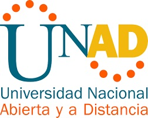

La Universidad Nacional Abierta y a Distancia (UNAD) es una institución pública nacional , cuenta actualmente con 75.000 estudiantes,de los cuales 60.000 cursan programas de educación superior y 15.000 desarrollan los ciclos previos de alfabetización, básica primaria y bachillerato a distancia.
Desde su fundación, la universidad ha orientado su misión institucional a la formación básica, técnica, tecnológica, profesional y posgradual, a través de la educación a distancia. Actualmente, la modalidad de educación a distancia que imparte la UNAD está soportada en el e-learning, dado los avances de Internet.